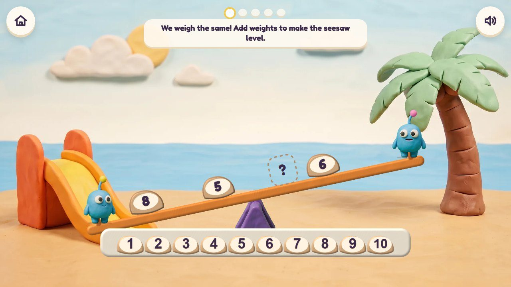
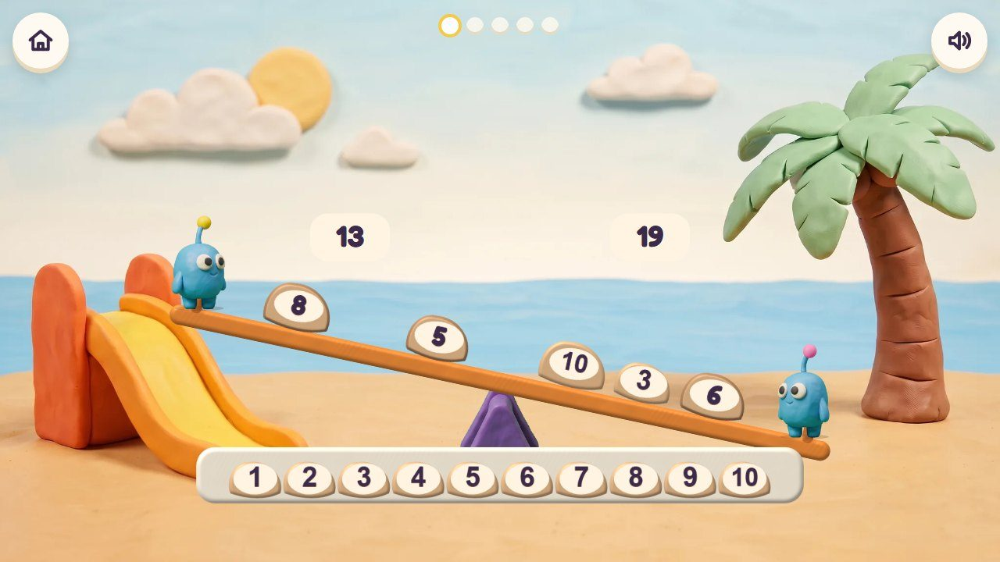
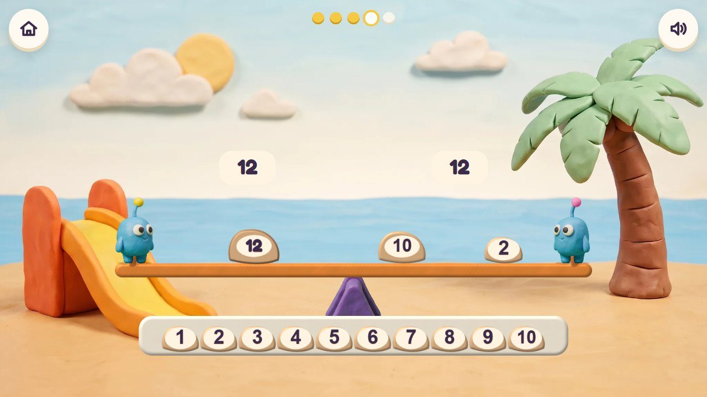
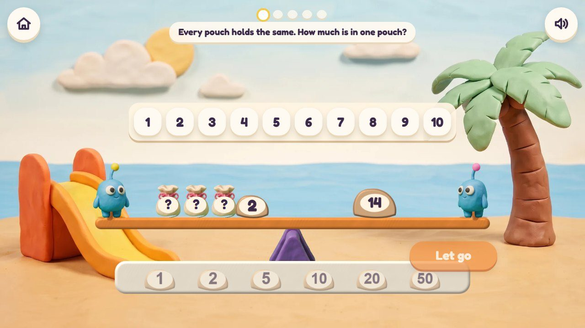
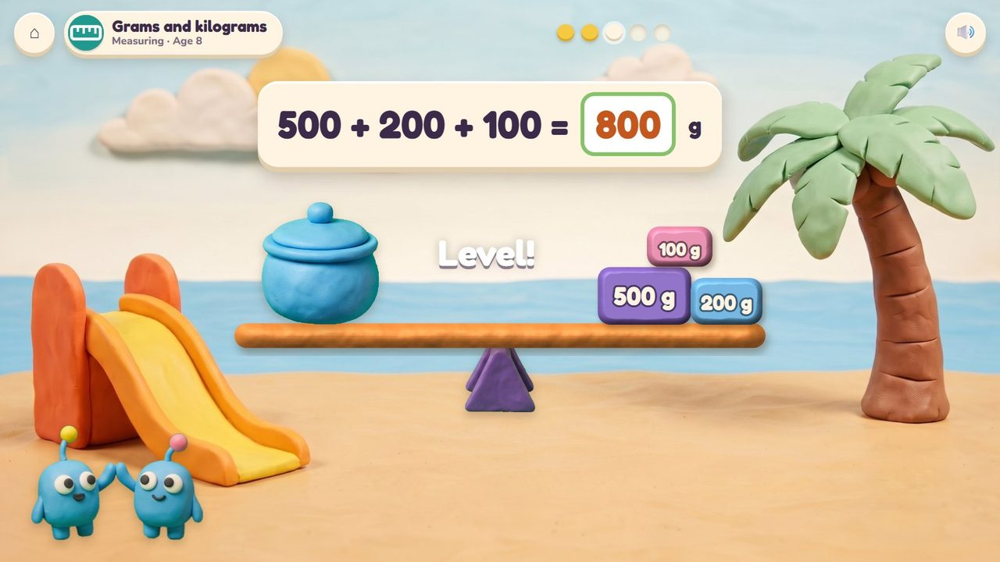
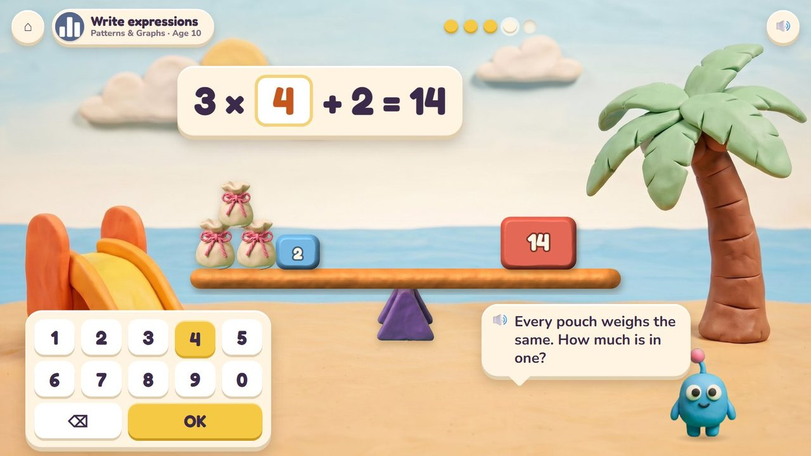

Seesaw Twins
The twins weigh the same: make the seesaw level.
46 lessons (27 taught here first, the rest practised here) in 7 topics:
Counting & NumbersAdding & Taking AwayTimes & SharingPlace ValueFractions & DecimalsMeasuringPatterns & Graphs

The game
Bim and Bam weigh exactly the same, so their plank is level only when both sides are equal. The child puts weights on, takes them off or opens mystery pouches; the plank tips live to the heavier side and settles level when it is right. It is the equal sign you can see, from "heavier" at 3 to unknowns and brackets at 10.
Hands-on
Drag weights on and off, squish two weights into one, open a pouch.
The end of a round
The twins bounce, and every balance of the round hangs in their seesaw mobile.
How it plays
These frames are the real app today; the frames further down show the same game in other lessons and ages.
1Make it level
Bim and Bam hold the plank; the weights are in the tray.
🔊 “We weigh the same! Add weights to make the seesaw level.”

2It tips live
13 against 19: the plank tips to the heavier side as weights go on.

3Level!
12 and 12: the plank settles level and the round is done.

4Mystery pouches
Every pouch holds the same: how much is in one?
🔊 “Every pouch holds the same. How much is in one?”
The quick round (from age 6)
The plank is shown with one weight missing: type it (4 + 3 = 5 + ?). Ten questions at 6-7, a 60-second round from 8; your time and your best on screen; only right answers count; a miss shows the answer and comes back later. No clock under 6.
The same game, other lessons and ages
The badge at the top left says the topic, the lesson and the age.

5Heavy and light · age 3
No numbers: a ball and a shell. Which one is heavier? Tap it.

6Find the missing number · age 6
The quick round: 4 + 3 = 5 + ?, type 2, the plank levels. Timed.

7Grams and kilograms · age 8
The pot against weights of 500 g, 200 g and 100 g: level at 800 g.

8Write expressions · age 10
Three pouches and 2 balance 14: 3 × ? + 2 = 14.
From age 3 to 10
| Age 3Pre-school | Heavy and light: a ball or a shell? More or fewer Peeps on each side. |
| Age 4Pre-K | Heavier and lighter; which number is bigger? |
| Age 5Kindergarten | Compare groups and numbers; plus, minus and equals. |
| Age 6Grade 1 | The equal sign: true or false? Missing numbers, fact families, turn-around facts. |
| Age 7Grade 2 | Hundreds, tens and ones weights; adding within 1000; why it works. |
| Age 8Grade 3 | Grams and kilograms; times and sharing are family (3 bags of 4 = 12); missing factors. |
| Age 9Grade 4 | Times as many; compare big numbers, fractions and decimals. |
| Age 10Grade 5 | Mystery pouches as unknowns; brackets and expressions; scaling. |
What changes from lesson to lesson
Weights
pictures, then numbers to 10, 20, 100, 1000, then grams, fractions and pouches
What is missing
nothing (compare), one weight, one pouch, a whole side
Help
the plank tips live; after a miss the twins count each side
How you answer
drag weights; the number pad for the quick round
Its 46 lessons
Age by age they are on the full list; here grouped by topic (the first activity named teaches a lesson, the others practise it).
Counting & Numbers 6
- More or fewer?
early yearsSeesaw Twins · Poke Pals - More, fewer or the same
early yearsSeesaw Twins · Poke Pals - Which number is bigger?
early yearsSeesaw Twins · Peek-a-Peep - One more, one fewer
early yearsPoke Pals · Seesaw Twins - Compare groups
K.CC.6Seesaw Twins · Poke Pals - Compare numbers to 10
K.CC.7Seesaw Twins · Number Lift
Adding & Taking Away 11
- Two parts make a number
K.OA.3Poke Pals · Seesaw Twins - Make 10
K.OA.4Poke Pals · Seesaw Twins · Scale Coat - Plus, minus and equals
K.OA.1Seesaw Twins · Scale Coat - Fact families
1.OA.4Seesaw Twins · Scale Coat - Turn-around facts
1.OA.3Seesaw Twins · Poke Pals - The equal sign: true or false?
1.OA.7Seesaw Twins - Find the missing number
1.OA.8Seesaw Twins · Scale Coat - Stories: how many more?
1.OA.1Seesaw Twins · Kite Tails - Add within 1000
2.NBT.7Number Lift · Seesaw Twins - Why does it work?
2.NBT.9Seesaw Twins - Missing numbers within 100
2.OA.1Seesaw Twins · Scale Coat
Times & Sharing 4
- Times and sharing are family
3.OA.6Seesaw Twins · Scale Coat - Missing factors
3.OA.4Seesaw Twins · Scale Coat - Times as many
4.OA.1Seesaw Twins · Garden Beds - Times-as-many stories
4.OA.2Seesaw Twins · Treasure Shop
Place Value 7
- Compare with >, = and <
1.NBT.3Seesaw Twins · Number Lift - Hundreds, tens and ones
2.NBT.1Number Lift · Seesaw Twins - 300 + 40 + 5
2.NBT.3Number Lift · Seesaw Twins - Compare three-digit numbers
2.NBT.4Number Lift · Seesaw Twins - Each place is ten times the next
4.NBT.1Number Lift · Seesaw Twins - Compare big numbers
4.NBT.2Number Lift · Seesaw Twins - Compare decimals to thousandths
5.NBT.3Number Lift · Seesaw Twins
Fractions & Decimals 5
- Equal fractions
3.NF.3Sandcastle Twins · Seesaw Twins - Compare: same bottom number
3.NF.3Sandcastle Twins · Seesaw Twins - Compare any two fractions
4.NF.2Sandcastle Twins · Seesaw Twins - Compare decimals
4.NF.7Number Lift · Seesaw Twins - Bigger or smaller? Scaling
5.NF.5Seesaw Twins · Sandcastle Twins
Measuring 10
- Heavy and light
early yearsSeesaw Twins - Heavier and lighter
early yearsSeesaw Twins - What can we measure?
K.MD.1Kite Tails · Seesaw Twins · Sandcastle Twins - Compare weights
K.MD.2Seesaw Twins - Grams and kilograms
3.MD.2Seesaw Twins - Weight and capacity stories
3.MD.2Seesaw Twins · Sandcastle Twins - Big and small units
4.MD.1Kite Tails · Seesaw Twins · Sandcastle Twins - Measuring stories
4.MD.2Kite Tails · Sandcastle Twins · Seesaw Twins - Change metric units
5.MD.1Kite Tails · Sandcastle Twins · Seesaw Twins - Change feet, inches and pounds
5.MD.1Kite Tails · Seesaw Twins
Patterns & Graphs 3
- Brackets first
5.OA.1Seesaw Twins · Scale Coat - Write expressions
5.OA.2Seesaw Twins - Read expressions
5.OA.2Seesaw Twins
Questions
- Mystery pouches and brackets at 10: a good way to start algebra?
- Anything in the storyboard to change (say the frame number)?